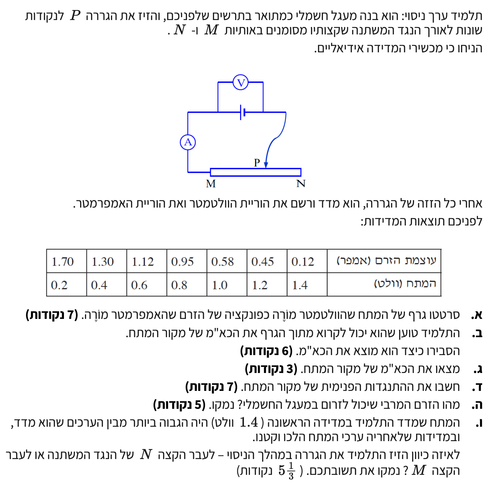

פתרון שאלה - מעגלי זרם ישר ואופיינים
פיזיקה 5 יח"ל
ניתוח מעגל המכיל נגד משתנה למציאת כא"מ והתנגדות פנימית
עודכן:
--- --:--:--
שלום תלמידים יקרים! 👋
לפנינו שאלה קלאסית במעגלי זרם ישר. ננתח יחד מעגל עם נגד משתנה (ראוסטט), נלמד כיצד לשרטט גרף מדויק ואיך לחלץ מתוכו את מאפייני מקור המתח - הכא"מ וההתנגדות הפנימית. זכרו לקרוא לאט ולהבין כל שלב!

[תמונת השאלה המקורית]
לא נמצאה תמונה בשם question-image.png באותה תיקייה.
מה נתון: נתונה לנו טבלת ערכים מתוך הניסוי. עבור כל הזזה של הגררה, נמדדו עוצמת הזרם \( I \) (באמפר) והמתח \( V \) (בוולט). היחידות הן יחידות תקניות (MKS) ולכן אין צורך בהמרת יחידות. הנתונים מופיעים בזוגות: \( (I, V) \).
מה מחפשים: אנו נדרשים לשרטט גרף של המתח כפונקציה של הזרם, כלומר גרף בו הזרם \( I \) נמצא בציר האופקי (ציר ה-x) והמתח \( V \) נמצא בציר האנכי (ציר ה-y).
עקרונות בשימוש:
העיקרון כאן הוא בניית גרף פיזיקלי תקני. עלינו לסמן צירים, לבחור קנה מידה אחיד, לסמן את נקודות המדידה ולהעביר קו מגמה (Best fit line) שעובר קרוב ככל האפשר לכל הנקודות, ולא לחבר אותן בקו שבור.
פתרון צעד-אחר-צעד:
נבחר קנה מידה שבו ציר הזרם מגיע עד ל- \( 2.0\text{ A} \) וציר המתח מגיע עד ל- \( 1.6\text{ V} \). נסמן את שבע הנקודות מתוך הטבלה ונעביר דרכן קו ישר שמייצג את המגמה הממוצעת של הניסוי.
טיפ מורה: בבגרות, על גרף לקבל ניקוד מלא עליו לכלול: כותרת, שמות צירים ויחידות, חלוקת קנה מידה אחיד, פיזור נכון של הנקודות, והעברת קו מגמה מיטבי. מומלץ לעבוד עם סרגל שקוף בכדי לראות גם את הנקודות שמתחת לקו כאשר משרטטים את קו המגמה. שימו לב שהנקודות אינן יוצרות קו מושלם בשל שגיאות מדידה – זה מצב טבעי בניסוי!
מה נתון: נתון הגרף ששרטטנו בסעיף הקודם, שהוא פונקציה לינארית של מתח כפונקציה של הזרם המעגל.
מה מחפשים: נדרש להסביר כיצד ניתן למצוא את הכא"מ (\( \varepsilon \)) של מקור המתח מתוך הגרף ששורטט.
נוסחאות בשימוש:
\( V_{ab} = \varepsilon - Ir \)
פתרון צעד-אחר-צעד:
נשים לב שהמשוואה \( V = \varepsilon - Ir \) מסדרת פונקציה לינארית מהצורה \( y = mx + n \), כאשר ציר ה-y הוא המתח \( V \), ציר ה-x הוא הזרם \( I \), השיפוע \( m \) הוא \( -r \), ונקודת החיתוך עם ציר ה-y (האיבר החופשי \( n \)) היא הכא"מ \( \varepsilon \).
הסבר מתמטי: אם נציב במשוואה זרם אפס \( I = 0 \) המייצג מצב בו המעגל פתוח (אין צריכת זרם), נקבל כי \( V = \varepsilon - 0 \cdot r = \varepsilon \).
מסקנה: כדי למצוא את הכא"מ מהגרף, על התלמיד להמשיך את קו המגמה ששרטט עד לנקודת החיתוך שלו עם הציר האנכי (ציר המתח). ערך המתח בנקודה זו (\( I=0 \)) שווה בגודלו לכא"מ המקור.
טיפ מורה: פעולה זו של הארכת קו הגרף לאזור בו לא נערכו מדידות נקראת אקסטרפולציה. במקרה זה, אין לנו קריאה פשוט מפני שלא ביצענו מדידה כזאת במהלך הניסוי, ולמרות זאת קו המגמה מאפשר לנו לחזות מה יהיה המתח גם בנקודות שלא מדדנו בהן.
מה נתון: מתוך קו המגמה ששרטטנו בסעיף א' (ומוצג באיור למעלה).
מה מחפשים: למצוא את הערך המספרי של הכא"מ \( \varepsilon \).
נוסחאות בשימוש:
\( V_{ab} = \varepsilon - Ir \)
פתרון צעד-אחר-צעד:
אם נאריך את קו המגמה של הגרף אל עבר ציר ה- \( V \), נראה שהקו חותך את הציר האנכי בערך \( V = 1.5\text{ V} \). (ניתן גם לזהות זאת מתמטית על ידי מציאת משוואת הישר על פי שתי נקודות הנופלות עליו).
מסקנה: הכא"מ של מקור המתח הוא \( \varepsilon = 1.5\text{ V} \).
טיפ מורה: בבדיקת הבגרות, גם אם נקודת החיתוך שלכם יצאה מעט שונה (למשל \( 1.48\text{ V} \) או \( 1.52\text{ V} \)) בגלל שרטוט ידני של קו המגמה, תקבלו ניקוד מלא אם תראו שהערך נלקח נכון מנקודת החיתוך של הישר שלכם.
מה נתון: מהגרף ששרטטנו וההסבר בסעיף ב', מצאנו שהשיפוע המייצג את הגרף הוא \( m = -r \).
מה מחפשים: את ההתנגדות הפנימית של מקור המתח, המסומנת באות \( r \).
נוסחאות בשימוש:
\( m = \frac{\Delta y}{\Delta x} \)
חישוב צעד-אחר-צעד:
נבחר שתי נקודות אשר נמצאות על קו המגמה עצמו (אין חובה שיהיו נקודות מדידה, אך במקרה זה שתי נקודות מדידה קרובות מאוד לקו המגמה האידיאלי). נבחר לדוגמה את הנקודות \( (0.12, 1.4) \) ו- \( (1.12, 0.6) \). נציב בנוסחת השיפוע:
\[ m = \frac{0.6 - 1.4}{1.12 - 0.12} = \frac{-0.8}{1.0} = -0.8\ \Omega \]
מכיוון ש- \( m = -r \), הרי ש: \( -r = -0.8 \implies r = 0.8\ \Omega \)
מסקנה: ההתנגדות הפנימית של מקור המתח היא \( r = 0.8\ \Omega \).
טיפ מורה: כלל זהב בחישוב שיפוע מגרף ניסויי: תמיד בחרו שתי נקודות מרוחקות ככל האפשר הנמצאות על הישר ששרטטתם. אל תיקחו באופן עיוור נתונים מהטבלה, אלא אם הם יושבים במדויק על קו המגמה. המרחק בין הנקודות מקטין את השגיאה היחסית בחישוב.
מה נתון: מצאנו את מאפייני הסוללה: הכא"מ \( \varepsilon = 1.5\text{ V} \) וההתנגדות הפנימית \( r = 0.8\ \Omega \).
מה מחפשים: את עוצמת הזרם המרבית (\( I_{\text{max}} \)) היכולה לזרום במעגל זה, והסבר למצב.
נוסחאות בשימוש:
\( V_{ab} = \varepsilon - Ir \)
\( V = IR \)
חישוב והסבר:
מצד אחד, מתח ההדקים מתואר על ידי הנוסחה \( V_{ab} = \varepsilon - Ir \). מצד שני, לפי חוק אוהם, מתח זה הוא גם המתח שנופל על הנגד החיצוני, כלומר \( V_{ab} = IR \). הזרם במעגל יהיה מרבי כאשר ההתנגדות החיצונית תהיה מינימלית, כלומר אפס (\( R = 0 \)) – מצב המכונה "קצר". במצב זה, מתח ההדקים מתאפס (\( V_{ab} = 0 \)). נציב זאת בנוסחת מתח ההדקים:
\[ 0 = 1.5 - I_{\text{max}} \cdot 0.8 \implies I_{\text{max}} = \frac{1.5}{0.8} = 1.875\text{ A} \]
נעגל את התשובה ל-3 ספרות מהותיות כנדרש.
מסקנה: הזרם המרבי שיכול לזרום במעגל הוא \( I_{\text{max}} = 1.88\text{ A} \) במצב של קצר (כשהתנגדות הנגד המשתנה אפסית).
טיפ מורה: בגרף הזרם-מתח (אופיין), נקודה זו מתקבלת בחיתוך קו המגמה עם ציר האופקי (ציר ה-x). במצב זה מתח ההדקים נופל לאפס (\( V = 0 \)) כי כל האנרגיה מומרת לחום על ההתנגדות הפנימית של הסוללה.
מה נתון: במדידה הראשונה נמדד המתח המקסימלי בניסוי, שעמד על \( 1.4\text{ V} \). לאחר מכן, התלמיד הזיז את הגררה והמשיך למדוד מתחים שהלכו וקטנו.
מה מחפשים: לאיזה כיוון הזיז התלמיד את הגררה במהלך הניסוי - לכיוון הקצה \( N \) או לכיוון הקצה \( M \)? עם נימוק מלא.
נוסחאות בשימוש:
\( V_{ab} = \varepsilon - Ir \)
\( V = IR \)
ניתוח פיזיקלי צעד-אחר-צעד:
שלב 1: ניתוח מסלול הזרם
נתבונן בשרטוט המעגל. ההדק הארוך של הסוללה הוא הפלוס (משמאל), והקצר והעבה הוא המינוס (מימין). הזרם יוצא מההדק החיובי, זורם דרך האמפרמטר ומגיע לנקודה \( M \), זורם דרך סליל הראוסטט עד לגררה בנקודה \( P \), ומשם חזרה להדק השלילי. כלומר, החלק הפעיל של הנגד הוא המקטע \( MP \).
שלב 2: ניתוח המגמה מתוך הנוסחאות
נתון לנו שמתח ההדקים \( V \) ירד במהלך הניסוי. לפי המשוואה \( V_{ab} = \varepsilon - Ir \), כדי שמתח ההדקים יקטן (כאשר הכא"מ \( \varepsilon \) קבוע), על מפל המתח הפנימי \( Ir \) לגדול, ולכן הזרם \( I \) חייב לגדול. הדבר מתאים גם לטבלה בה רואים קשר הפוך בין מתח לזרם.
שלב 3: מסקנה לגבי ההתנגדות
משילוב נוסחת מתח ההדקים עם חוק אוהם, מתקבל הקשר הידוע כחוק אוהם למעגל השלם: \( I = \frac{\varepsilon}{R_{MP} + r} \). הדרך היחידה להגדיל את הזרם במעגל היא להקטין את ההתנגדות החיצונית \( R_{MP} \).
שלב 4: מסקנה על תנועת הגררה
כדי להקטין את ההתנגדות \( R_{MP} \), יש לקצר את אורך התיל שדרכו עובר הזרם, כלומר לקרב את הנקודה \( P \) אל הנקודה \( M \).
מסקנה: התלמיד הזיז את הגררה לכיוון הקצה \( M \). הקטנת האורך הפיזי של התיל מקטינה את ההתנגדות, מה שגורם לעלייה בזרם ולירידה במתח ההדקים כפי שנצפה בניסוי.
טיפ מורה: סעיף כזה דורש שילוב של יכולת קריאת תרשים ומיומנות מתמטית בהבנת קשרים ישרים והפוכים מתוך נוסחאות. תמיד התחילו במעקב "עם האצבע" על התרשים כדי לגלות מאיפה הזרם נכנס ומאיפה הוא יוצא מהנגד המשתנה!